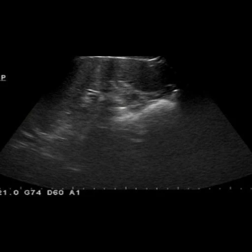
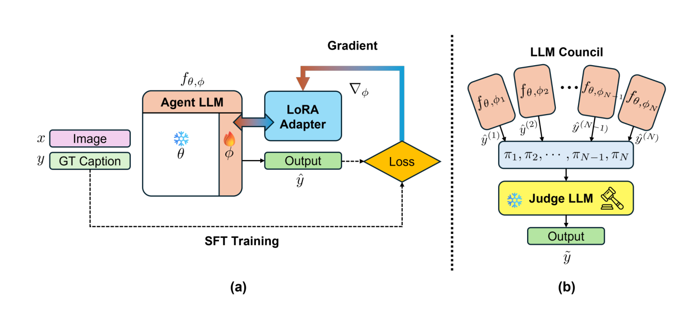

WACV 2027 · Applications Track
SMILE: A Structured Multi-Agent Clinical Reasoning for Liver Ultrasound Understanding
Yonsei University
Three specialists, one report
Tap each agent to hear it out, then wake the judge.

INPUT · ULTRASOUND
Reference report
Agent AImage appearance
Agent BPathology-aligned context
Agent CClinical attributes
0 of 3 agents heard
Hear all three agents to wake the judge.
Judge's final report Selected example
Where the wording comes from content-word overlap, illustrative
Agent B · graded attributes no wording to trace
Abstract
SMILE uses three independently adapted vision-language specialists to describe liver ultrasound appearance, provide pathology-aligned context, and answer targeted visual questions. A frozen vision-language judge evaluates the images and specialist responses, critiques inconsistencies, and generates a consolidated report under explicit clinical constraints. We evaluate report similarity, clinical entity preservation, visual question answering, and image–text alignment on two ultrasound datasets.
Method

Quantitative Results
ROUGE-1
higher is betterAblation Studies
Individual agents versus combinations
higher is betterCite as
TODO
The BibTeX entry will be posted here once the camera-ready version is finalized.